Components
card.secondary (surfaces) · card.primary with 4 surface variants · group.boundary
All 7 reference pages combined in skill-read order. cream + indigo · Inter · the default mode.
Locked tokens — canvas, palette, type, spacing, shadows, animation.
Deliverable 01 · Foundations
Each foundation is a registry: a closed list of named values. The generator never invents a hex, a font-size, or a spacing number — it references the token. If a situation needs a value not in the registry, the situation is wrong, not the registry. This is what makes nine different diagram templates feel like one product.
Every diagram ships in two flavors — light (cream canvas, the v1 spec) and dark (near-black canvas). The two share everything structural: viewBox, layout, type roles, spacing tokens, animation classes, connector geometry, manifest pins. They differ only in color values. Below is the contract. Every token in the rest of this page has a dark sibling named --<token>-dark.
Every theme-dependent token has both names. Light is the canonical name; dark adds the -dark suffix. Theme-agnostic tokens (spacing, type sizes, viewBox, animation timing) have a single name and apply to both files.
| Theme-dependent | Theme-agnostic |
|---|---|
--canvas-bg · --canvas-bg-dark--surface-sql · --surface-sql-dark--ink-1 · --ink-1-dark--indigo · --indigo-dark--rule · --rule-dark--shadow-dark · --shadow-dark-dark |
--canvas-width (1660)--font-family (Inter, …)All 14 spacing tokens All 7 animation classes Type sizes, weights, letter-spacing Connector geometry (curve, bend, lane gutter, label zones) |
Inside an emitted SVG, gradient ids stay stable: <linearGradient id="surfaceSql"> in both .light.svg and .dark.svg. What differs is the stop-color values inside. This lets every connector reference (fill="url(#surfaceSql)") and every card primitive author once and render correctly in either theme — the theme pass swaps stop values, not ids.
The two shadow filters (cardShadow, cardShadowDark) keep the same ids across themes. The dark theme rewrites their bodies — cardShadow becomes a near-zero halo at rgba(255,255,255,0.08) (elevation via stroke-like glow), cardShadowDark becomes a deeper #000000 drop at 0.55 opacity. See §01.5.
The skill emits two SVG files per diagram. Step 5 generates one layout; the theme pass applies each token set to produce the two files. Step 6 renders both PNGs and runs the self-review checks against each independently — see SKILL.md §5–7. A multi-diagram set pinned by theme: both in its manifest ships 2 × N SVGs.
prefers-color-scheme); theme-suffix naming; mixed elevation strategy (light cards lose shadow, dark cards deepen it); neutral mid-tone dark surfaces; manifest-level theme is authoritative.The diagram's outer geometry is locked. The cream background, the 1660px viewBox width, and Inter as the type family are non-negotiable across all nine templates — they are the load-bearing brand surface.
| Token | Value | Notes |
|---|---|---|
| --canvas-width | 1660 | Locked viewBox width. Use --canvas-width-wide = 2200 only for explicit landscape three-column overviews — see Templates → freeform. |
| --canvas-bg | url(#bgGrad) | Vertical gradient #f5f1ea → #ece8e0. Always full-canvas <rect> at index 0. |
| --canvas-margin | 56 | Inset from each viewBox edge before any content. Title baseline at 56, first card at 112. |
| --canvas-margin-tight | 40 | Only on dense templates (sequence, data-schema) where every pixel of width matters. |
| --font-family | Inter, ... | Full stack: Inter, system-ui, -apple-system, sans-serif. Locked. |
| --font-mono | monospace | Use font-family="monospace" attribute. For IDs, code, terminal output only. |
| Token | Value | Notes |
|---|---|---|
| --canvas-bg-dark | url(#bgGrad) | Vertical gradient #1a1a1f → #14141a. Same shape, same gradient-id. Theme pass swaps the stops. |
| --canvas-width | 1660 | Theme-agnostic. Locked. |
| --canvas-margin | 56 | Theme-agnostic. |
| --canvas-margin-tight | 40 | Theme-agnostic. |
Every color is named by what it means, not by what it looks like. The indigo identity is fixed. Card gradients are categorical: a “Postgres” card uses --surface-sql in every diagram of a set; a worker uses --surface-neutral wherever it appears. The set manifest pins these once.
The only color that crosses every template. Indigo signals primary flow, active, and brand. It is the default arrow color, the active card gradient, and the only accent that may appear in the title region.
Each dark card gradient maps to a service kind. The generator picks by category, not by aesthetics. A category that isn't here doesn't get a new gradient — it gets remapped to the nearest semantic match.
| Token | Stops | Use for |
|---|---|---|
| --surface-primary | #6573c9 → #3a4a8a | Active agent, primary API, the hero element in any diagram. The “your service” gradient. |
| --surface-neutral | #252521 → #1a1a18 | Workers, secondary services, persistence orchestrator. Default for unknown-category services. |
| --surface-slate | #4a5568 → #2d3748 | Research, analytics, queue / Pub/Sub, anything stream-like. |
| --surface-sql | #1e3f52 → #162e3e | SQL databases (Postgres, MySQL, Cloud SQL). Always paired with the cylinder icon. |
| --surface-secure | #2a5e40 → #1e4530 | Auth providers, secret stores, gates, harnesses, anything “passing / healthy / secure”. |
| --surface-store | #5e3f1c → #3f2810 | Blob storage (S3, GCS, Azure Blob), file systems, artifact catalogs. |
| --surface-cache | #6b4d8a → #4a3565 | NEW · Cache, in-memory store, Redis. Distinct from queue (slate) to stop ambiguity. |
| --surface-deferred | rgba(58,74,138,0.35) on cream | NEW · Canonical “not yet built / v2 stub” treatment. Replaces the two improvised looks in the screenshot. |
| Token | Value | Notes |
|---|---|---|
| --surface-light | #ffffff | Default light card fill. Pairs with --rule stroke at 1px. |
| --surface-tint | #f0ebe3 | Subtly-tinted light surface for sub-cards, chips on cream. |
| --surface-reference | #ebe6db | NEW · Dimmer tint for lookup / reference / enum cards — visually subordinate to card.secondary. |
| --rule | #e8e2d8 | Default light-card border. |
| --rule-strong | #ddd5c6 | Section dividers, group boundaries. |
| --ink-1 | #1a1a18 | Primary text on light surfaces. |
| --ink-2 | #4a4845 | Body text. |
| --ink-3 | #706e67 | Secondary / metadata / subtitle. |
| --ink-4 | #9e9b95 | Tertiary / muted, italic connector subtitles. |
Reserved for status dots, ticks, and the rare semantic line. Never apply status colors to card fills — use the surface gradients above. The single exception is --surface-secure for systems whose primary identity is security (auth, secret stores).
Lifted for AAA-adjacent contrast against the dark canvas. The light theme's --indigo (#4f5fb8) lands at 5.0:1 against #1a1a1f; the dark theme uses #7785d4 at 6.4:1.
Each categorical surface lifts one value step toward mid-tone. Same hue family; the gradient still falls top-left → bottom-right, just from a higher baseline so the card stays elevated against the dark canvas.
| Token | Stops (dark) | Notes vs light |
|---|---|---|
| --surface-primary-dark | #7785d4 → #4d5db0 | Up from #6573c9 → #3a4a8a. Indigo identity reads brighter on dark. |
| --surface-neutral-dark | #3a3a40 → #28282d | Hardest case — light #252521 → #1a1a18 is invisible on dark canvas. Lifted significantly. |
| --surface-slate-dark | #5d6b80 → #3d4858 | Up from #4a5568 → #2d3748. |
| --surface-sql-dark | #2a5e7a → #1c4a64 | Up from #1e3f52 → #162e3e. |
| --surface-secure-dark | #3d8058 → #2a6042 | Up from #2a5e40 → #1e4530. |
| --surface-store-dark | #825a30 → #5c3c1a | Up from #5e3f1c → #3f2810. |
| --surface-cache-dark | #8666a8 → #5d4577 | Up from #6b4d8a → #4a3565. |
| --surface-deferred-dark | rgba(124,139,220,0.25) on dark | "Not yet built" — indigo tint at 25% on the dark canvas, with the same dashed-stroke treatment. |
These flip the most. On dark canvas, the "light cards" become mid-tone neutrals (slightly cool — a 6-point tilt toward indigo so accents read as belonging). The ink scale inverts: #ebebe5 primary text on the dark light-card is 7.8:1 — AAA territory.
| Token | Value (dark) | Notes vs light |
|---|---|---|
| --surface-light-dark | #252531 | Default mid-tone "light card" on dark. Replaces #ffffff. |
| --surface-tint-dark | #2c2c38 | Subtly elevated sub-card. Replaces #f0ebe3. |
| --surface-reference-dark | #1f1f29 | Dimmer than --surface-light-dark — for lookup / enum / reference cards. Replaces #ebe6db. |
| --rule-dark | rgba(255,255,255,0.10) | Default 1px border on dark light-cards (light cards lose their drop shadow in dark — see §01.5). |
| --rule-strong-dark | rgba(255,255,255,0.16) | Section dividers, group boundaries. |
| --ink-1-dark | #ebebe5 | Primary text on dark light-cards. 7.8:1 on #252531 (AAA). |
| --ink-2-dark | #c4c2bc | Body. |
| --ink-3-dark | #9a988f | Secondary / subtitle. |
| --ink-4-dark | #7a7873 | Tertiary / italic captions. |
All 8 status colors survive unchanged. Each was checked against the dark canvas at the chosen value step; the worst is --status-secondary (#6b7280) at 4.4:1 — passes AA. None required adjustment.
Type roles are named, not picked by inspection. Letter-spacing is part of the role and isn't optional — small caps without spacing read as cramped. The annotated screenshot's “floating MCP TOOLS” problem is fundamentally a typography role collision: section labels and connector labels were styled identically. They aren't anymore.
| Role | Size · Weight · Spacing | Color | Where |
|---|---|---|---|
| --type-title | 22–24 · 600 · -0.3 | --ink-1 | Diagram title. One per diagram. Centered on canvas at y = 56–60. |
| --type-subtitle | 12–13 · 400 · 0.2 | --ink-3 | One-line below the title. |
| --type-section | 10–11 · 600 · 1.6–2.0 | --ink-4 / matched | ALL CAPS region labels (STAGE 2, AGENT LAYER). Only at the top of a group. |
| --type-card-title | 14–16 · 600 · 0 | --ink-1 / white | Card primary text. Light on dark surfaces, dark on light. |
| --type-card-body | 11 · 400 · 0 | --ink-2 / rgba(255,255,255,0.92) | Card detail rows. |
| --type-card-caption | 10 · 400 italic · 0 | --ink-3 / rgba(255,255,255,0.55) | Footer line, “e.g.” notes, audit trail. |
| --type-conn-label | 9–10 · 600 · 0.8–1.2 | matched to line | ALL CAPS connector label. Sits in the above-line label zone (see Connectors). |
| --type-conn-sub | 9 · 400 italic · 0 | --ink-4 | Connector subtitle — sits in the below-line zone, half-line offset. |
| --type-mono | 10–11 · 400/600 · 0 | varies | Inline IDs, code, terminal output. font-family="monospace". |
Type sizes, weights, and letter-spacing are theme-agnostic. Only the color paired with each role changes. The dark column references --ink-*-dark from §01.2.
| Role | Light color | Dark color |
|---|---|---|
| --type-title | --ink-1 (#1a1a18) | --ink-1-dark (#ebebe5) |
| --type-subtitle | --ink-3 (#706e67) | --ink-3-dark (#9a988f) |
| --type-section | --ink-4 (#9e9b95) | --ink-4-dark (#7a7873) |
| --type-card-title (light card) | --ink-1 (#1a1a18) | --ink-1-dark (#ebebe5) |
| --type-card-title (dark card) | white | white (unchanged — dark cards stay text-on-dark) |
| --type-card-body (light card) | --ink-2 (#4a4845) | --ink-2-dark (#c4c2bc) |
| --type-card-body (dark card) | rgba(255,255,255,0.92) | rgba(255,255,255,0.92) (unchanged) |
| --type-card-caption (light card) | --ink-3 (#706e67) | --ink-3-dark (#9a988f) |
| --type-card-caption (dark card) | rgba(255,255,255,0.55) | rgba(255,255,255,0.55) (unchanged) |
| --type-conn-label | matched to line (#4f5fb8) | matched to line (#7785d4) |
| --type-conn-sub | --ink-4 (#9e9b95) | --ink-4-dark (#7a7873) |
The single rule that exists today — “~40px breathing room” — is replaced by 14 tokens. The right value is determined by what's adjacent to what: cards alone, cards with arrows between them, columns, stages, lane gutters, label clearances. Every layout decision references one of these by name.
| Token | px | When to use |
|---|---|---|
| --canvas-margin | 56 | Canvas edge inset on all four sides. |
| --canvas-margin-tight | 40 | Dense templates only (sequence, data-schema). |
| --gap-card-tight | 24 | Two cards in the same rank (same row, same semantic level), no arrow between. |
| --gap-card | 56 | Default between cards. |
| --gap-card-arrow | 96 | Two cards connected by an arrow. Leaves room for label + subtitle. |
| --gap-stage | 120 | Between numbered stages in pipeline-flow. Wider than --gap-card-arrow so the stage tokens read. |
| --gap-section | 72 | Between major regions inside a diagram (e.g. between the input row and the agent row). |
| --gap-row | 48 | Vertical row spacing inside a column (same column, different rank). |
| --lane-width | 240 | Width of a sequence lifeline. Locked across sequence diagrams for visual rhythm. |
| --lane-gutter | 16 | Spacing between two parallel arrows in the same lane / region pair. |
| --lane-row | 56 | Vertical step between successive horizontal arrows in a sequence diagram. |
| --card-pad | 24 | Inset from card edge to first content. |
| --card-pad-tight | 16 | Compact cards (connector-map spokes, lifeline headers). |
| --label-clearance | 12 | Vertical offset of a connector label above/below its line center. |
| --arrow-clearance | 16 | Minimum perpendicular distance between an arrow and an unrelated card it passes near. |
| --arrow-stub | 8 | Arrow ends this far short of the card edge so the arrowhead has visual air. |
| --boundary-pad | 32 | Group/boundary box inset around its contained cards. |
| --bend-radius | 24 | Minimum curve radius for any non-axial connector. Below this, the curve reads as a kink. |
Two shadows. The light-card shadow softens against cream; the dark-card shadow grounds against cream. Never invent a third. The variant suffix -strong exists for one specific case — a dark card on the dark half of the cream gradient — and uses the same shape with higher opacity.
| Token | Params | Use for |
|---|---|---|
| --shadow-light | dy=2, std=6, opacity=0.10 | Light cards on cream. |
| --shadow-dark | dy=3, std=8, opacity=0.22 | Dark cards on cream (default). |
| --shadow-dark-strong | dy=3, std=8, opacity=0.25 | Dark cards on the darker half of --canvas-bg only. |
On the dark canvas the light-theme shadow (#1a1a18 flood at 0.10–0.22) is a near-no-op. We split: light cards on dark switch to a near-zero white halo that reads as a 1px stroke (drop shadow off); dark categorical cards on dark deepen the drop with a #000000 flood at higher opacity. Filter ids stay the same (cardShadow, cardShadowDark) so callers don't change between themes — the body of the filter rewrites per theme.
| Token | Params (dark) | Notes |
|---|---|---|
| --shadow-light-dark | dy=0, std=1.5, opacity=0.08, flood #ffffff | Halo-as-stroke. Reads as a 1px luminous edge around the mid-tone light-card. Drop shadow replaced. |
| --shadow-dark-dark | dy=4, std=12, opacity=0.55, flood #000000 | Deeper drop. Still does meaningful work because dark cards are elevated above the canvas. |
| --shadow-dark-strong-dark | dy=4, std=12, opacity=0.65, flood #000000 | Edge case — dark cards on the darkest half of --canvas-bg-dark. |
<!-- dark-theme equivalents — same ids, different bodies -->
<filter id="cardShadow" x="-4%" y="-4%" width="108%" height="116%">
<feDropShadow dx="0" dy="0" stdDeviation="1.5" flood-color="#ffffff" flood-opacity="0.08"/>
</filter>
<filter id="cardShadowDark" x="-4%" y="-4%" width="108%" height="116%">
<feDropShadow dx="0" dy="4" stdDeviation="12" flood-color="#000000" flood-opacity="0.55"/>
</filter><!-- always include both. omit one only if the diagram has no card of that type -->
<filter id="cardShadow" x="-4%" y="-4%" width="108%" height="116%">
<feDropShadow dx="0" dy="2" stdDeviation="6" flood-color="#1a1a18" flood-opacity="0.10"/>
</filter>
<filter id="cardShadowDark" x="-4%" y="-4%" width="108%" height="116%">
<feDropShadow dx="0" dy="3" stdDeviation="8" flood-color="#1a1a18" flood-opacity="0.22"/>
</filter>Animations are constrained on purpose. A polished design document is calm; the more things move, the more it reads like a marketing page. Five keyframes, applied through five named classes. Max 3 animation classes per diagram. Motion-path dots count as one class.
| Token | Keyframe | Use for |
|---|---|---|
| .anim-ring | rotateDash · 4s linear infinite | Rotating dashed ring around an active processor card. Conveys “running.” |
| .anim-ring-slow | rotateDash · 6s linear infinite | Slower variant for secondary processors. |
| .anim-pulse | pulse · 1.8s ease-in-out infinite | Live status dot, “online” indicator. Opacity 0.7 → 1. |
| .anim-tick | tick · 2s ease-in-out infinite | Color shift on a status dot to signal periodic check. Stagger with animation-delay. |
| .anim-caret | caret · 1s steps(2) infinite | Terminal-style blinking caret. Use only inside a monospace card. |
| .anim-loop | loopPulse · 3.2s ease-in-out infinite | Soft opacity pulse on a feedback-loop arc. Subtle. |
| .anim-motion-dot | animateMotion · stagger via begin= | Flowing dots along a defined motion path. Counts as one class regardless of dot count. |
<style>
@keyframes rotateDash { from { stroke-dashoffset: 0; } to { stroke-dashoffset: -60; } }
@keyframes pulse { 0%,100% { opacity: 0.7; } 50% { opacity: 1; } }
@keyframes tick { 0%,100% { fill: #3d7f5b; } 50% { fill: #5aad80; } }
@keyframes caret { 0%,100% { opacity: 0.85; } 50% { opacity: 0; } }
@keyframes loopPulse { 0%,100% { opacity: 0.45; } 50% { opacity: 0.85; } }
.anim-ring { animation: rotateDash 4s linear infinite; }
.anim-ring-slow { animation: rotateDash 6s linear infinite; }
.anim-pulse { animation: pulse 1.8s ease-in-out infinite; }
.anim-tick { animation: tick 2s ease-in-out infinite; }
.anim-caret { animation: caret 1s steps(2) infinite; }
.anim-loop { animation: loopPulse 3.2s ease-in-out infinite; }
</style>All five keyframes and seven classes are theme-agnostic — the timing, easing, and shape of every animation is identical across light and dark renders. The one keyframe with literal colors is tick (#3d7f5b → #5aad80); both greens read on the dark canvas (luminance ≥ 0.30, ratio ≥ 6:1 against #1a1a1f), so no dark-variant keyframe is needed. If a future status color is added that fails the dark legibility check, define a sibling keyframe <name>-dark rather than overwriting the existing one.
A proposal ships 3–6 diagrams. Today the same Postgres can show up as --surface-sql in one and --surface-neutral in another, because each template re-decides. The rules below are enforced by the set manifest; this is the list it pins.
y=56).--type-section and --type-conn-label. Never tighten or loosen for one diagram.--gap-card — it uses --canvas-width-wide instead.theme: both ships both flavors of every figure. Per-diagram theme override is a hard error — see Set manifest §07.4.Closed primitive library — cards, chips, shapes, lanes, stages, groups, callouts.
Deliverable 02 · Component library
A card is not a rectangle the generator draws — it is a slotted component the generator fills. Reserved positions for the icon, the status dot, the footer line. This is the fix for the screenshot's biggest visible failure: icons crashing through titles because no template had a card slot to put them in.
Every primitive on this page exists in both light and dark theme. Geometry, slots, paddings, slot positions are identical — only token values swap. The categorical surfaces (--surface-sql, --surface-primary, etc.) keep their id across themes; the gradient stops inside change. The two filter ids (cardShadow, cardShadowDark) stay the same; their bodies rewrite per theme — see foundations §01.5.
| Primitive group | Theme behavior |
|---|---|
| Cards · all 7 variants | Identical layout. Surface tokens swap per foundations §01.2. Light cards (card.secondary, card.reference, card.compact) lose their drop shadow in dark — they get a 1px rgba(255,255,255,0.10) stroke instead. Dark categorical cards keep their drop shadow (deeper flood, #000000 at 0.55). See §01.5. |
| Chips · 4 types | Identical. chip.status dot colors are theme-portable (all 8 status hues clear AA on the dark canvas). chip.count and chip.label use the light/dark card tokens depending on the card they sit on. |
| Shapes · 6 nodes | Identical geometry. node.note has a theme-specific fill: light = warm cream tint #fbf5e6; dark = warm near-black #2a2620. The gold stroke #d4a64a stays in both — it's what makes the note read as a note. See preview below. |
| Stages · numbered tokens | Identical. Number circle uses the theme-appropriate indigo (#4f5fb8 light, #7785d4 dark). Stage label ink swaps from --ink-4 to --ink-4-dark. |
| Lanes · sequence primitives | Identical. Lifeline stroke uses --rule-strong / --rule-strong-dark. Activation box fill stays solid surface gradient. |
| Groups · boundaries | Identical. Dashed stroke uses --ink-4 / --ink-4-dark for neutral boundaries; --indigo / --indigo-dark for trust boundaries. Label chip uses the light-card token of its theme. |
| Callouts & legend | callout.note has the same theme-specific fill as node.note (warm). Legend chips use light-card tokens per theme. |
node.note and callout.note (warm fill swaps), and any chip whose default fill is cream (gets the dark-light-card fill).All cards share the same anatomy: an optional icon slot, a required title row, an optional sub-row, a body, and an optional footer. The fill (light or surface gradient) determines the variant. The slots determine the modifiers.
Three fills, three modifiers, two states. Total: a closed set of named cards the generator picks from. A “Postgres + status + footer” card is card.primary(--surface-sql) + status + footer — three named choices, no improvisation.
Small typographic atoms. Chips appear inside a card (as a metadata badge) or adjacent to a card (as a label / explanation). They never float alone — that's how the “floating MCP TOOLS” problem started.
Cards do most of the work, but architecture diagrams reach for other shapes too: a circle for an event, a stadium pill for an async stream, a diamond for a decision, a hexagon for a service mesh node, a star for a highlight, a note tile for a callout body. Each is named, color-paired with the surface gradients, and sized at three locked scales (S 64 / M 96 / L 128). The point of registering them is the same as cards — a downstream generator never invents one.
Every shape composes with the surface gradients defined in Foundations. The semantic meaning lives in the shape itself; the gradient layer tells you which subsystem the shape belongs to.
| Shape | Size variants | Default surfaces | When to reach for it |
|---|---|---|---|
| node.circle | S 64 · M 96 · L 128 | --surface-primary, --surface-slate | Events, message checkpoints, system-context external actors. The event-flow template's bread & butter. |
| node.pill | w auto · h 40 / 52 / 64 | --surface-slate (default), --surface-secure (terminal-OK) | Streams, async state markers, start/end terminators. The stadium shape reads as “in motion”. |
| node.diamond | corner-to-corner 80 / 120 / 160 | white card · 1.5px stroke (default) | Decision points. Pair with two labelled arrows from opposite corners (yes/no, route-A/route-B). |
| node.hexagon | w 72/104/144 · h 84/120/166 | --surface-neutral, --surface-primary | Microservices, mesh nodes, container instances. Use when a diagram has 4+ peers of the same kind. |
| node.star | bounding 72 / 108 / 144 | --surface-secure (default) | Spotlight a single SLA-pinned, key, or hero item. Max one per diagram — otherwise the spotlight loses meaning. |
| node.note | 120 × 88 (default) | warm cream tint · gold stroke | Sticky-note style annotation with multi-line body. Like callout.note but heavier — for content, not flags. |
card.primary instead. The taxonomy works because it's predictable across diagrams.Used in pipeline-flow and freeform sequenced layouts. A numbered token marks the start of a stage; a stage divider separates it visually from the next.
For sequence diagrams. A lane is a labeled vertical lifeline; a card sits at the top, the lifeline drops below, and an activation box marks when the actor is busy.
A group is a dashed soft rectangle around 2+ cards that share a context (a VPC, a trust boundary, a logical region). Always tagged with a top-left label chip; never silent.
Inline annotations and end-of-diagram legends. Use sparingly — a diagram that needs three callouts is a diagram that should be split.
The closed list. A downstream generator should be able to fill any one of these slots and produce a correct diagram. If a primitive isn't here, it doesn't exist in this version of the system.
| Component | Variant | When to reach for it |
|---|---|---|
| card.primary | + icon, status, footer | Dark hero. Default for agents, primary APIs, the active card. |
| card.secondary | + icon, status, footer | Light supporting. Frontends, workers, peers. |
| card.reference | monogram or list body | Enums, lookup tables, dim references in data-schema and freeform. |
| card.compact | 160 × 56 grid card | Connector-map spokes, infrastructure side panels. |
| card.deferred | any base + deferred state | Canonical “v2 / not yet built”. Replaces ad-hoc faded looks. |
| card.highlight | any base + dashed border + legend chip | Single card that needs special attention. Legend chip required. |
| chip.status | live · healthy · degraded · blocked · idle | In-card status badge or adjacent to card. |
| chip.count | numeric | Short integer badge. |
| chip.version | v2.3 / v1-beta | Version pill. |
| chip.label | ALL-CAPS context | Adjacent to its owning element. Never freestanding. |
| node.circle | S 64 · M 96 · L 128 | Event nodes, message checkpoints, system-context actors. |
| node.pill | stadium · h 40/52/64 | Streams, async state markers, start/end terminators. |
| node.diamond | corner-to-corner 80/120/160 | Decision points. Pair with two labelled outgoing arrows. |
| node.hexagon | w 72/104/144 | Microservices, mesh nodes, container instances. |
| node.star | bounding 72/108/144 | Spotlight one SLA-pinned, key, or hero item — max 1 per diagram. |
| node.note | 120 × 88 (default) | Sticky-note annotation with multi-line body. |
| lane.header | card at top of sequence lane | Sequence diagrams only. |
| lane.vertical | dashed lifeline drop | Sequence diagrams only. |
| lane.activation-box | 16px column on lifeline | Marks the active interval for one actor. |
| stage.numbered-token | ø28 circle + digit | Pipeline-flow stage markers. |
| stage.divider | vertical dashed rule + chip | Separates pipeline stages visually. |
| group.boundary | dashed soft rectangle | VPC, trust boundary, logical region. |
| group.label | top-left tag on boundary | Always required on a group. |
| callout.note | warm-tinted tethered note | FYI annotation. Always tethered. |
| legend.chip | swatch + label row | Inside a legend card, bottom-right of canvas. |
Arrow taxonomy, curves, gutters, label zones, density caps.
Deliverable 04 · Connector geometry
Eight named arrow types, a marker registry, a gutter system for parallel arrows, label zones with a hard no-rotation rule, crossing-jog geometry, and density caps that force a diagram to split rather than crowd. If the generator can't honour all of these, the diagram is wrong — split it.
chip.label on a card.Connector geometry is theme-agnostic — every rule on this page (curve modes, lane gutters, label zones, clearance, density caps, crossing priority) applies unchanged to light and dark renders. What differs between the two output files is the color of strokes, marker fills, label text, and the callout-pill chip. The mapping is mechanical and lives in foundations §01.2.
| Element | Light value | Dark value | Notes |
|---|---|---|---|
| Primary arrow stroke | #4f5fb8 | #7785d4 | Lifted indigo for AAA-adjacent contrast on dark canvas. |
| Secondary / grey stroke | #9e9b95 | #7a7873 | Darker tone — both inks land at 4–4.5:1 against their canvas (AA large). |
Marker arrowAccent, arrowAccentSm fill | #4f5fb8 | #7785d4 | Matches primary stroke. |
Marker arrowGrey fill | #9e9b95 | #7a7873 | Matches secondary stroke. |
| Status arrow markers | status colors | status colors (unchanged) | All 8 status hues are theme-portable; no adjustment needed. |
| Zone A label (caps above-line) | matched to stroke | matched to stroke | Inherits the new dark stroke color automatically. |
| Zone B label (italic below) | --ink-4 (#9e9b95) | --ink-4-dark (#7a7873) | Connector subtitle. |
| Zone C label (on-line pill) | fill #f5f1ea, stroke #4f5fb8, text #4f5fb8 | fill #252531, stroke #7785d4, text #c5cdf0 | The pill becomes a mid-tone light-card on dark; indigo stroke lifts; text uses indigo-tint for legibility on the lifted-tile fill. |
<defs> per fileEach output file declares its theme-appropriate markers once. The ids are stable (arrowAccent, arrowGrey, etc.) so every marker-end="url(#arrowAccent)" reference in the SVG body works unchanged across both files. Only the <path fill=> inside the marker differs.
Each arrow type carries a specific meaning. The generator picks by semantic, not by aesthetic. solid-primary for high-traffic flow, dashed-handoff for discrete handoff, mirror-secondary for read-only / “also goes here”. Adding a ninth type means the spec is wrong — extend the taxonomy formally, never inline.
All markers are declared at the top of <defs>. refX places the marker tip relative to the path end; refY centers it. These dimensions are tuned to look correct against a 1.6–2px stroke. Don't scale markers per arrow — pick the named marker that fits.
<!-- complete marker registry — paste into every diagram's <defs> -->
<marker id="arrowAccent" markerWidth="8" markerHeight="8" refX="6" refY="3" orient="auto"><path d="M0,0 L0,6 L8,3 z" fill="#4f5fb8"/></marker>
<marker id="arrowAccentSm" markerWidth="7" markerHeight="7" refX="5" refY="3" orient="auto"><path d="M0,0 L0,6 L7,3 z" fill="#4f5fb8"/></marker>
<marker id="arrowSlate" markerWidth="8" markerHeight="8" refX="6" refY="3" orient="auto"><path d="M0,0 L0,6 L8,3 z" fill="#4a5568"/></marker>
<marker id="arrowGrey" markerWidth="8" markerHeight="8" refX="6" refY="3" orient="auto"><path d="M0,0 L0,6 L8,3 z" fill="#9e9b95"/></marker>
<marker id="arrowGreen" markerWidth="8" markerHeight="8" refX="6" refY="3" orient="auto"><path d="M0,0 L0,6 L8,3 z" fill="#3d7f5b"/></marker>
<marker id="arrowRed" markerWidth="8" markerHeight="8" refX="6" refY="3" orient="auto"><path d="M0,0 L0,6 L8,3 z" fill="#cc6e55"/></marker>
<marker id="arrowOpen" markerWidth="9" markerHeight="9" refX="7" refY="3.5" orient="auto"><path d="M0,0 L8,3.5 L0,7" stroke="#4a5568" stroke-width="1.4" fill="none"/></marker>Three curve modes. Pick by the geometry of the shortest path, not by aesthetics.
| Rule | Value | Why |
|---|---|---|
| --bend-radius | 24 | Minimum curvature radius. Below this, a curve reads as a kink. If your control point produces <24, increase the gap between endpoints or switch to straight. |
| --max-bend-angle | 60° | No single curve may bend more than 60°. If the geometry demands more, you need a different layout — not a sharper curve. |
| curve choice | L · Q · C | Straight for axial. Quadratic for offsets up to ~200px. Cubic for longer S-curves spanning rows or columns. Don't mix. |
| corners | forbidden | No M…L…L… right-angle elbows. Use Q with a control point at the corner instead. |
When two or more arrows run between the same region pair, they need reserved space to live in. Without it, they bunch onto one line and become illegible.
--lane-gutter (16px) reservation between adjacent lanes. Each lane is centered on its allocated row; labels sit above each lane's own line, never shared.--lane-gutter. The card grows; the lanes don't crowd.chip.count badge (“4 EVENTS”). The individual semantics belong in the receiver's body text or in a footnote, not as four arrows.The “DESIGN DOCS” / “MERGED PRS” rotation failure from the screenshot lives here. The fix is mechanical: a label occupies one of three zones, and rotation is forbidden. If horizontal space isn't sufficient, the arrow changes shape, not the label.
chip.label on its owning element.chip.label on a card. If it describes a flow, it sits in zone A above that line.--label-clearance × 2 (24px) of each other = move one arrow into a different lane. Two labels overlapping is never an aesthetic decision.Crossings are unavoidable in some layouts. When they happen, the rule is deterministic: the secondary arrow jogs over the primary; if both are primary, the shorter jogs over the longer.
| Situation | Which arrow jogs |
|---|---|
| Primary × Secondary (mirror, dashed) | Secondary always jogs |
| Primary × Primary | Shorter line jogs |
| Async × Sync | Async (dotted) jogs |
| Anything × Error path | Error path stays straight (signals importance) |
| Jog geometry | 6px arc, perpendicular to underlying line |
| Max crossings per diagram | 3 — beyond that, re-layout or split |
The MCP-Adapter-through-the-cards failure from the screenshot lives here. The fix: an arrow can't pass within --arrow-clearance (16px) of any card it doesn't terminate at. If geometry demands closer, the arrow routes around.
| Token | Value | Rule |
|---|---|---|
| --arrow-clearance | 16 | Minimum perpendicular distance between any arrow and any card it doesn't terminate at. |
| --arrow-stub | 8 | Arrow path ends 8px short of the card edge so the arrowhead has air. |
| --lane-row | 56 | Minimum vertical separation between successive horizontal arrows in a sequence diagram. |
When any of these is exceeded, the diagram must be split or simplified. These are not aesthetic targets — they are the line below which a diagram becomes unreadable.
| Cap | Limit | What to do if exceeded |
|---|---|---|
| Arrows entering or leaving one card | 6 | Group functionally related arrows into a single trunk, or move the card's role onto two cards. |
| Parallel arrows in one region pair | 3 | Collapse to a single trunk + chip.count (see 04.4c). |
| Crossings per diagram | 3 | Re-layout. If the geometry truly requires more, split the diagram. |
| Cards per diagram | 18 | Above this the diagram reads as a list. Use a higher-level system-context view + drill-down. |
| Distinct arrow types per diagram | 4 | If a fifth seems needed, two of them are doing similar work. Merge. |
| Distinct surface gradients per diagram | 5 | Above this, the legend dominates the diagram. Re-map a category to --surface-neutral. |
A diagram passes the connector contract if every one of these is true. If any is false, the diagram is wrong — not a matter of taste.
--bend-radius (24) or angle above 60°--lane-gutter (16) apart; >3 parallel collapses to a trunk--arrow-clearance (16) of any unrelated card--arrow-stub (8) short of card edges78 icons across 9 categories + monogram fallback + icon→gradient map.
Deliverable 03 · Icon library
Every icon fits a 32 × 32 bounding box, uses filled silhouettes with consistent radii, and pairs with a canonical surface gradient via the set manifest. The library covers compute (incl. VM, k8s, edge, batch, GPU), data (incl. warehouse, lake, ETL, ML, time-series), network (proxy, mesh, ingress, VPN, NAT), security (RBAC, signing, audit, MFA), observability (health, SLO, error tracker), workflow nodes (start/end, branch, timer, signal, manual), integration (webhook, websocket, GraphQL, gRPC, polling), and domain icons (payment, email, push, calendar, media). The icon.generic-service fallback handles everything else — the system never improvises a new icon shape inline.
fill="currentColor". All icons render with currentColor on their root, so one ancestor color attribute drives the whole icon. Use fill="#1a1a18" on light cards, fill="rgba(255,255,255,0.85)" on dark cards. Category-tinted icons (e.g. blue for sql) inherit their category color from the surface gradient.Today each icon ships in two variants: on-light-card (rect fill #1a1a18, internal glyphs rgba(255,255,255,0.55)) and on-dark-card (rect fill rgba(255,255,255,0.18), internal glyphs rgba(255,255,255,0.85)). With the dark theme, the variant axis becomes orthogonal to theme: there are now four contexts an icon can sit in, not two. The geometry of every icon is identical across all four cells; only the rect fill and internal glyph colors change.
| Context | Rect fill | Internal glyphs | Notes |
|---|---|---|---|
| Light theme · on light card card.secondary on cream canvas | #1a1a18 (near-black) | rgba(255,255,255,0.55) | v1 baseline. Strong dark tile + muted internal lines. |
| Light theme · on dark card card.primary (any --surface-*) on cream | rgba(255,255,255,0.18) | rgba(255,255,255,0.85) | v1 baseline. Translucent white tile + brighter glyphs. |
| Dark theme · on light card card.secondary (#252531) on near-black canvas | rgba(255,255,255,0.18) | rgba(255,255,255,0.85) | Visually identical to the light-theme-on-dark-card cell. Same approach: translucent light tile + bright glyphs. The mid-tone surface (#252531) reads "darkish" so the same fill works. |
| Dark theme · on dark card card.primary (lifted --surface-*) on near-black | rgba(255,255,255,0.22) | rgba(255,255,255,0.90) | Slight bump in both opacities — the lifted categorical surfaces in dark theme are paler than their light-theme originals, so the icon's tile + glyphs lift to keep the contrast step that v1 has. |
The matrix collapses to two visually distinct treatments. Light-theme-on-light-card is the unique "dark glyph on a dark tile" look. The other three rows are all "light glyph on a translucent tile" — only the opacity of the tile and glyphs nudges by a few points across cells. In an emitted SVG, the same icon definition appears twice (once per parent card type), and the theme pass adjusts the two opacities for the dark variant.
icon.generic-service)The monogram tile uses the service's pinned surface gradient for its tile color (same gradient id, theme-appropriate stops). The text glyph is white in both themes. No special-casing.
fill="currentColor"The convention from v1 still holds: glyphs that use fill="currentColor" inherit from their ancestor color attribute. In a dark-theme card, set the ancestor color="rgba(255,255,255,0.85)" instead of v1's color="rgba(255,255,255,0.55)" — the matrix above gives the value.
Every icon obeys the same construction rules. This is the difference between a coherent set and a set of clip-art collected over time.
| Rule | Value | Why |
|---|---|---|
| bounding box | 32 × 32 | All icons centered around their group origin (0,0) — drop with <g transform="translate(cx,cy)">. |
| corner radius | 2 (outer) / 1 (inner detail) | Locked across the set so nothing reads as hand-drawn. |
| stroke weight | 1.5 (inner) / 2.5 (only for shackles) | When an icon needs a stroke at all; most are filled silhouettes. |
| fill model | currentColor + 1–2 rgba overlays | Single color hex driven externally, internal detail via rgba(255,255,255,0.X) for dark icons or rgba(0,0,0,0.X) for light. |
| anchor point | visual center, not bounding-box center | Database cylinders feel “centered” when their visual mass is centered, not their bbox. |
| scale range | 0.6 – 1.4 | Below 0.6 the icon loses density; above 1.4 the corner radius reads wrong. Stay in range. |
Each cell shows the icon on a light surface (cream tint, for use inside card.secondary) and a dark surface (for use inside card.primary and its categorical variants). Default colors below assume the icon is on its canonical card type — see Foundations → Surface gradients.
The brief calls this out as a specific failure mode: today, the system invents new icon shapes for unknown services and the result clashes. The fallback is named and visual: a monogram tile in the same 32×32 box.
When an icon appears in card.primary (any categorical surface gradient), this table defines which gradient. Pinned across diagrams via the set manifest. Same service → same icon → same gradient, every figure.
| Service kind | Icon | Surface gradient |
|---|---|---|
| Primary API · active agent | icon.service / icon.agent | --surface-primary (indigo) |
| Worker · background job | icon.worker / icon.scheduled | --surface-neutral |
| Function · lambda | icon.function | --surface-neutral |
| SQL database | icon.sql | --surface-sql (deep blue) |
| NoSQL · document | icon.nosql | --surface-sql |
| Cache · Redis | icon.cache | --surface-cache (mauve) |
| Queue · stream · topic | icon.queue / icon.stream | --surface-slate |
| Blob storage | icon.bucket / icon.fs | --surface-store (warm brown) |
| Search · vector | icon.search / icon.vector | --surface-slate |
| CDN · edge · gateway | icon.cdn / icon.gateway | --surface-primary or light card |
| Load balancer | icon.lb | light card · --indigo icon |
| Auth · IdP · secret | icon.lock / icon.oauth / icon.vault | --surface-secure |
| Observability | icon.metrics / .logs / .trace | --surface-neutral |
| User · admin · analyst | icon.user / .admin / .analyst | light card · --ink-1 icon |
| External · third-party | icon.external / .api-external / .connector | light card · dashed border |
| Unknown / unmapped | icon.generic-service | closest semantic gradient · monogram fill |
Per-template visual contracts (9 templates).
Deliverable 05 · Per-template visual contracts
A visual contract is a five-field card per template: which components from the library it uses, which icons it pulls from the set, the spacing and layout rules specific to that diagram type, which arrow types appear, and the anti-patterns to avoid. The semantic-side guidance — "what information to capture" — stays in the shared template Markdown at references/templates/<name>.md; these contracts replace the visual-side guidance only.
Every template's visual contract is theme-agnostic. The components used, icons pulled, spacing and layout rules, arrow types, and anti-patterns are all identical between light and dark renders. The only thing that differs per template is the color values referenced via foundation tokens — and those swap mechanically per foundations §01.0.
| Template | Dark behavior |
|---|---|
| layered-architecture | Identical layout. Surface tokens swap. Layer dividers use --rule-strong-dark. Lane gutters unchanged. See examples/layered-architecture.{light,dark}.svg. |
| pipeline-flow | Identical layout. Stage tokens use --indigo-dark for the circle fill. Output cards (reference variant) become --surface-reference-dark. The repair-turn callout pill uses #252531 fill + #7785d4 stroke. See examples/pipeline-flow.{light,dark}.svg. |
| sequence | Identical layout. Lane lifelines use --rule-strong-dark. Lifeline labels swap to --ink-1-dark. Activation boxes stay solid surface gradient. |
| system-context | Identical layout. External integration tiles use the same monogram surfaces. Trust boundary stroke uses --indigo-dark. |
| data-schema | Identical layout. Entity card chrome lifts; PK/FK chip fills use --surface-tint-dark; relationship lines use --ink-3-dark. |
| infrastructure | Identical layout. Region/VPC boundaries use --ink-4-dark dashed; cloud-provider icons follow the icon matrix (§03.0). |
| event-flow | Identical layout. Topic/queue cards use lifted --surface-slate-dark; consumer fan-out arrows use the dark primary stroke. |
| connector-map | Identical hub-and-spokes geometry. Spoke monograms follow §03.4 mapping in both themes. |
| freeform | Identical layout. Multi-column strategies unchanged. All component primitives follow their own theme behaviors from components §02.0. |
card.secondary for outer-edge layers (surfaces, third-parties)card.primary in 4 surface variants for the active layer--type-section centered, no boundary box needed
icon.browser/.mobile/.terminal; API → icon.gateway; services → icon.agent/.service/.worker; data → icon.sql/.bucket/.cache--gap-section (72) between layer baselines--gap-card (56)
solid-primary downward between adjacent layersmirror-secondary for read-replica / lookupstage.numbered-token for each stage (ø28)card.primary hero per stage (240×120 fixed)card.reference optional sub-row showing typed outputstage.divider only when an asynchronous boundary exists between two stages
icon.scheduled for cron stages; icon.function for transform stages--gap-stage (120)solid-primary between adjacent stages, label ALL-CAPS in zone A naming the transformed payloaddashed-handoff for the (max 1) bounded feedback loop, label as a zone-C pill
lane.header as light card or surface variant per actor typelane.vertical dashed lifeline dropping from each headerlane.activation-box on actors that are busy across rowscallout.note sparingly, tethered or anchored to a lane
--lane-row + 80)--lane-width (240)sync-call for requests (solid slate)return for responses (dashed-open slate)async-event only when the message is fire-and-forgetcard.primary centered (the system). Surrounding card.compact for actors and externals. group.boundary for the system trust boundary.icon.user/.admin/.analyst for actors. icon.external/.api-external/.connector for third-parties. icon.gateway for the system itself.--gap-card-arrow at minimum between hero and any satellite.solid-primary for primary usage. mirror-secondary for ancillary data flows. Labels describe verb (sends, syncs, reads).card.secondary with a stack of typed-field rows. card.reference for enums / lookups. Field rows use the monospace type.--gap-card minimum.solid-primary with crow's-foot endpoint variants (1:1, 1:N, N:M). Labels are the FK column name.group.boundary heavy use — region, VPC, subnet (up to 2 nested levels). card.primary in surface variants for the infra components themselves.--boundary-pad 32 inset. Cards within a region cluster by layer (compute top, storage bottom).card.primary for producers and consumers. card.primary with --surface-slate + icon.stream for topics (centered).icon.service/.worker/.function for producers/consumers. icon.stream for every topic.async-event (dotted indigo) for every producer→topic and topic→consumer line. Labels are event names in ALL CAPS.card.primary hub, many card.compact (160×56) spokes. Optional group.boundary grouping spokes by category.icon.generic-service monogram fallback — most integrations don't have a slot in the canonical icon set.solid-primary for live integrations, mirror-secondary for read-only / future. Labels are the protocol or product (OAuth, webhook, REST).icon.generic-service for anything unmapped.18 canonical SVG examples — 9 templates × light + dark.
Deliverable 06 · Worked canonical examples
Each example below ships as a pair: <name>.pixel.light.svg + <name>.pixel.dark.svg. The two files share layout, components, icons, arrow routes, and labels — only color values, shadow filter bodies, and canvas gradient stops differ. They are the canonical anchors the downstream generator targets: a diagram produced from the same spec should read as a sibling of these.
SKILL.md workflow emits both files for every diagram by default (manifest theme: both). Cream-canvas Notion gets the light variant; dark-mode Notion gets the dark. See foundations §01.0 for the theme model.
Four horizontal layers: surfaces → API → services → data. Demonstrates categorical gradients (the data layer uses three distinct surfaces — sql, store, cache), the mirror-secondary arrow for read-only lookups, and the lane-gutter rule on the four parallel arrows leaving the API.
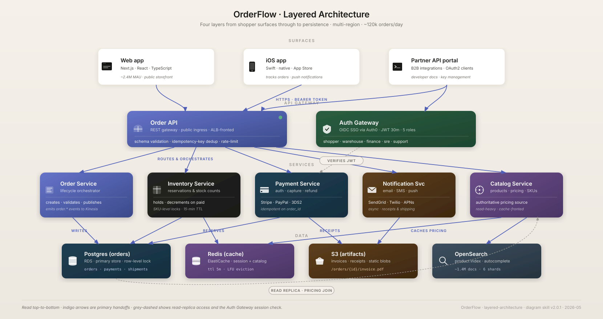
Five left-to-right stages with numbered tokens, hero cards, and dim reference cards below showing the typed output each stage emits. Demonstrates stage.numbered-token, card.reference for output rows, and the on-line pill label (zone C) used for the bounded feedback loop.
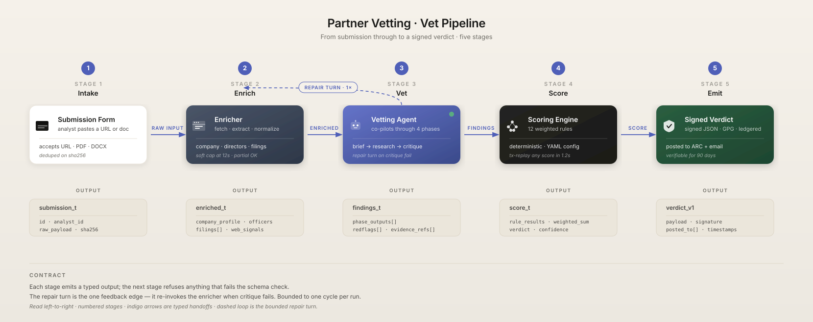
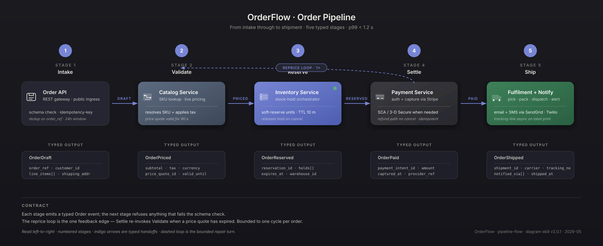
Five vertical lanes, lifelines, activation boxes on the active actors, sync calls paired with returns. Exercises the no-rotation rule — every label horizontal even though messages span the full canvas width.
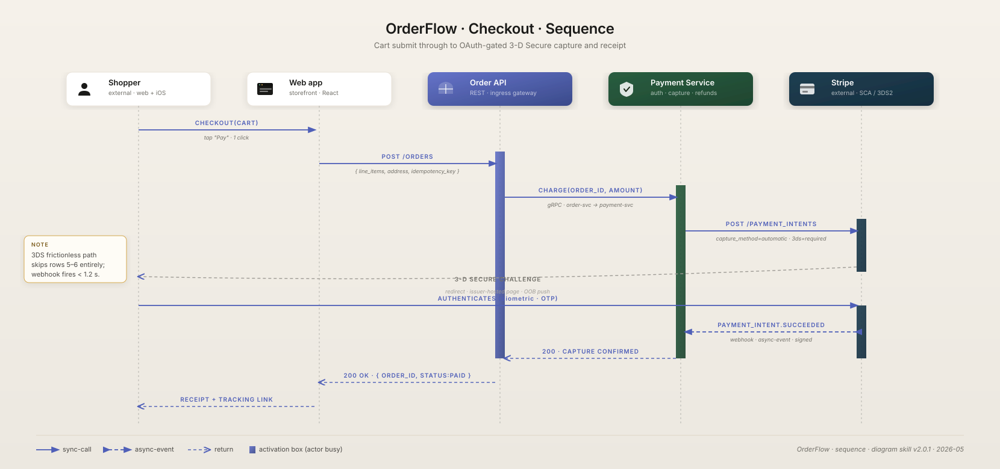
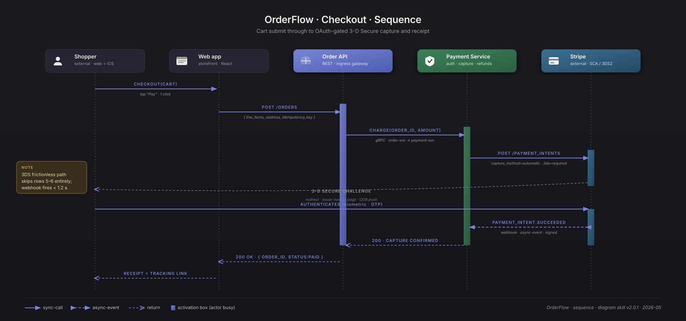
The outer boundary view: who uses Partner Vetting and what it connects to. External integration tiles, trust boundary, light cards on cream / mid-tone on dark.
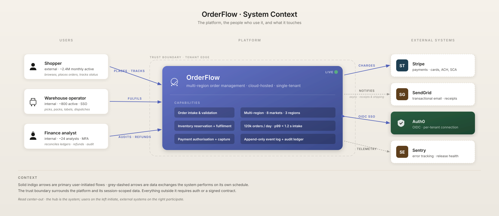
ER view of the proposal's entities. Reference cards (many), bidirectional relationships, type rows.
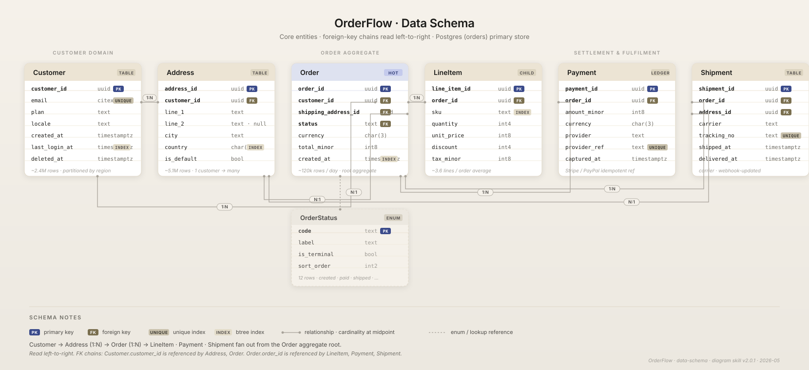
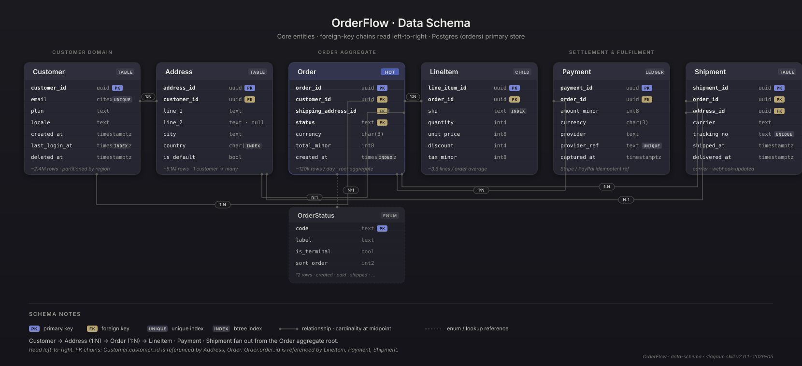
Cloud topology: VPC, regions, load balancers, services, data tier. Nested group boundaries; the full icon palette.
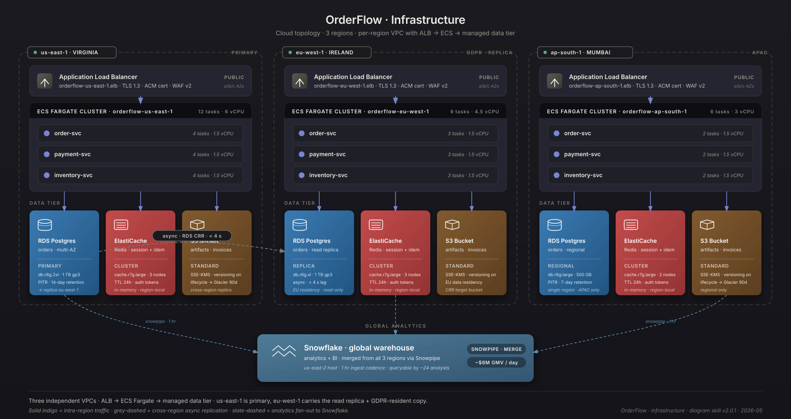
Pub/Sub topology: producers → topics → consumers. Trunk collapse when 5+ events fan out.
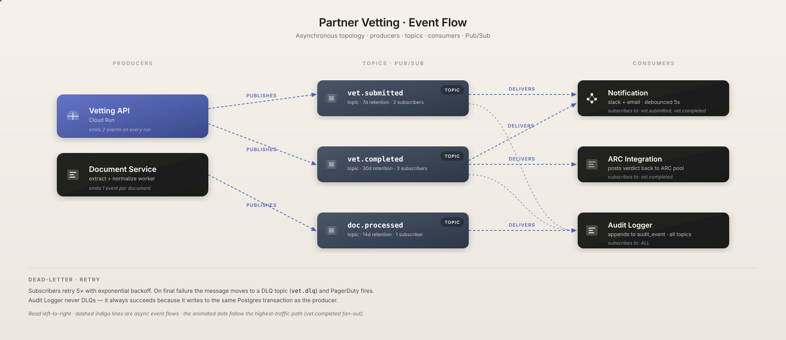
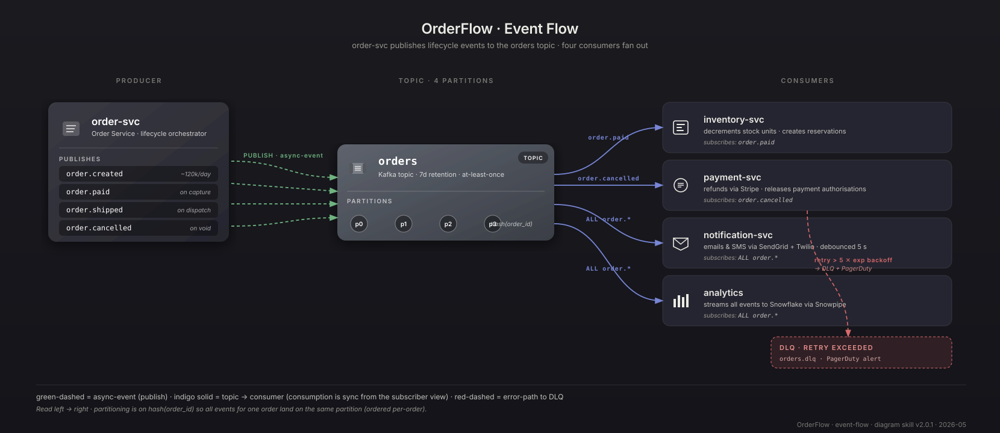
Vetting API at hub, third-party integrations on spokes. Compact cards; monogram fallback for the long tail.
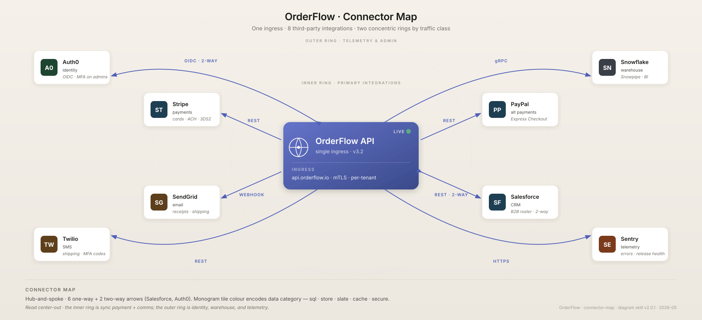
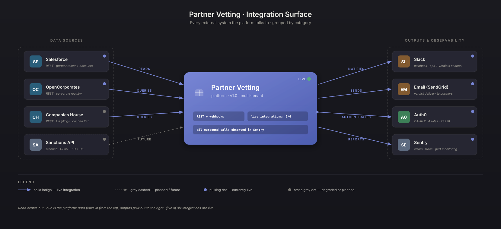
The catch-all. Demonstrates the decomposition procedure — nouns → cards, verbs → arrows, groupings → boundaries.
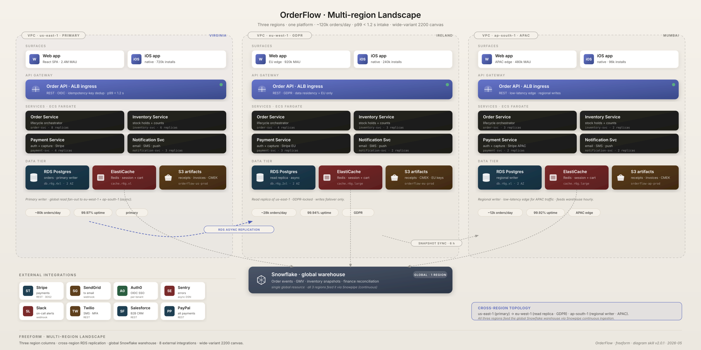
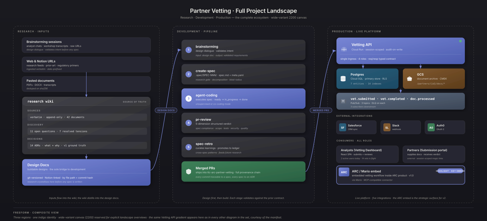
Open every example side-by-side and the same proposal reads the same way — in either theme. The manifest pins service → gradient-id, service → icon, label spelling; the theme pass swaps gradient stops + filter bodies. Identity is theme-agnostic; appearance is theme-specific.
| Service | Label | Gradient (id, theme-agnostic) | Icon |
|---|---|---|---|
| Primary API | Vetting API | --surface-primary | icon.gateway |
| Active agent | Vetting Agent | --surface-primary | icon.agent |
| Web frontend | Vetting Dashboard | --surface-light · light card | icon.browser |
| Auth provider | Auth Service | --surface-secure | icon.oauth |
| Primary database | Postgres | --surface-sql | icon.sql |
| Blob storage | GCS | --surface-store | icon.bucket |
| Cache | Redis | --surface-cache | icon.cache |
Cross-diagram consistency mechanism · mode + theme pinning.
Cross-diagram consistency mechanism
Today's SKILL.md says “read the first diagram and use it as the style anchor.” That's hopeful but unenforceable — the model has to re-derive what's anchored every time. A small manifest, authored once at the start of a proposal and persisted in the conversation, lets every later diagram look up the answer instead of inferring it.
The manifest is a closed list of the things that must be identical across a set. It does not pin layout or content — those are per-template decisions. It pins identity.
| What's pinned | Why |
|---|---|
| Service → label string | “Postgres” is “Postgres” in every figure, not “Cloud SQL” here and “the DB” there. |
| Service → surface gradient | Same gradient ID, every diagram. A service that's --surface-sql in figure 1 doesn't become --surface-neutral in figure 3. |
| Service → icon | Same icon shape — cylinder for Postgres, cloud for the CDN, gateway for the API. |
| Group → color | A trust boundary or VPC region named in two diagrams uses the same boundary stroke color. |
| Title typography | Inherited; identical position, size, weight, spacing. |
| Mode | Pinned per set — pixel (default) or material. Authoritative; per-diagram override is a hard error. A proposal renders in one design system end-to-end. |
| Theme | Pinned per set — light, dark, or both. Authoritative; per-diagram override is a hard error. |
| Animation budget already spent | If figure 1 used anim-pulse + anim-ring, figure 2 may use at most one more new class before hitting the cap. |
Plain YAML. Embed inline in the proposal's conversation or commit it as a sibling file next to the SVG outputs. The downstream skill reads it before each generation pass.
# diagram-set-manifest.yaml
set:
name: "Partner Vetting"
version: "v1.0"
canvas_width: 1660
mode: pixel # pixel | material (default: pixel)
theme: both # light | dark | both (default for proposals)
canvas_bg:
light: "#f5f1ea -> #ece8e0"
dark: "#1a1a1f -> #14141a"
services: # service → label + surface + icon, pinned set-wide
vetting_api:
label: "Vetting API"
surface: --surface-primary
icon: icon.gateway
notes: "the hero element of the proposal"
vetting_agent:
label: "Vetting Agent"
surface: --surface-primary
icon: icon.agent
dashboard:
label: "Vetting Dashboard"
surface: light # light card · white fill
icon: icon.browser
auth:
label: "Auth Service"
surface: --surface-secure
icon: icon.oauth
postgres:
label: "Postgres"
surface: --surface-sql
icon: icon.sql
gcs:
label: "GCS"
surface: --surface-store
icon: icon.bucket
redis:
label: "Redis"
surface: --surface-cache
icon: icon.cache
groups: # named boundaries that may appear in multiple figures
vpc:
label: "VPC · us-central1"
stroke: --ink-4
trust_boundary:
label: "Trust boundary"
stroke: --indigo
animations_used: # running tally — cap is 3 per diagram
- .anim-pulse
third_parties: # long tail — fall back to monogram
stripe: { label: "Stripe", monogram: "St", tile: --surface-slate }
sendgrid: { label: "Sendgrid", monogram: "Sg", tile: --surface-store }
launchdarkly: { label: "LaunchDarkly", monogram: "L", tile: --surface-secure }
Three checkpoints. Skipping any of them means a downstream diagram drifts.
on first diagram
As you build the first diagram, write the YAML. Every service you decide to draw gets a row in services:. Save it inline in the conversation or as a sibling file.
on each later diagram
Before instantiating any card, look up its service in services:. Use the pinned label, surface, and icon. If the service isn't in the manifest, add it now and propagate.
on any change
If the manifest changes (a service is renamed, a gradient swap), every diagram in the set is regenerated. The whole point is that the set is coherent — partial updates aren't allowed.
Theme is set-level, not diagram-level. A proposal is a coherent reader experience: either it ships in one theme, or it ships both flavors of every figure (the default). A per-diagram theme override is a hard error — generate the one-off outside the set if you want it.
theme: value | Output behavior |
|---|---|
| both | Default. Emit <slug>.pixel.light.svg and <slug>.pixel.dark.svg for every diagram. A 5-diagram proposal ships 10 files. Identity pins apply to both — the gradient name pins; the gradient value varies by theme. |
| light | Emit only <slug>.pixel.light.svg. Backward-compatible. |
| dark | Emit only <slug>.pixel.dark.svg. For known-dark hosts. |
Identity rules — the cross-theme pins — are theme-agnostic. The same service maps to the same gradient id in both themes. The gradient body (stop values) differs per theme via the mode's foundations.html §01.2, but the assignment doesn't.
# cross-theme identity rule
services:
postgres:
label: "Postgres"
surface: --surface-sql # same gradient ID, both themes
icon: icon.sql # same icon, both themes
# theme-pass interpretation:
# light render -> surfaceSql stops: #1e3f52 -> #162e3e
# dark render -> surfaceSql stops: #2a5e7a -> #1c4a64
# icon.sql geometry: identical
# icon.sql fill: #1a1a18 (light) / rgba(255,255,255,0.18) (dark)theme: both for the Partner Vetting setA five-diagram proposal under one manifest with theme: both ships ten files:
diagrams/
partner-vetting-context.pixel.light.svg
partner-vetting-context.pixel.dark.svg
partner-vetting-architecture.pixel.light.svg
partner-vetting-architecture.pixel.dark.svg
partner-vetting-pipeline.pixel.light.svg
partner-vetting-pipeline.pixel.dark.svg
partner-vetting-sequence.pixel.light.svg
partner-vetting-sequence.pixel.dark.svg
partner-vetting-schema.pixel.light.svg
partner-vetting-schema.pixel.dark.svg
diagram-set-manifest.yamlEvery pair shares the same layout. Every set uses the same service-to-gradient mappings. Per-pair, the values inside <defs> differ; the structure is byte-for-byte the same.
theme: on a single diagram within a set. If you want a one-off variant in a different theme, generate it outside the set or split into two separate manifests.Mode is set-level, exactly like theme. A proposal renders in one design system end-to-end — Pixel for one proposal, Material for another, never mixed. The two systems use different palettes, type families, and shadow recipes; intermixing them within a single proposal produces a visually incoherent reader experience.
mode: value | Output behavior |
|---|---|
| pixel | Default. Cream + indigo on a polished doc page. Inter type. 78-icon custom library. Files emit as <slug>.pixel.{light,dark}.svg. Use for general-purpose architecture diagrams and subject-agnostic systems. |
| material | Material 3 design system — sable + sage palette. Roboto Flex + Roboto Serif. Material Symbols Outlined icons. Files emit as <slug>.material.{light,dark}.svg. Use when the diagram should share visual DNA with an M3 product surface. |
The structural pins — services, labels, icons, groups, animation budget — are mode-agnostic by intent. A given service maps to the same surface-token name (e.g. --surface-sql) in both modes; the token's value is what differs. The diagram structure, the layout rules, the input contract — all identical. Mode swaps the rendering, not the meaning.
# cross-mode identity rule
services:
postgres:
label: "Postgres"
surface: --surface-sql # same token name, both modes
icon: icon.sql # same icon name, both modes
# mode-pass interpretation:
# pixel render -> surfaceSql stops via pixel/foundations.html §01.2
# material render -> surfaceSql stops via material/foundations.html §01.2
# icon.sql geometry: pixel custom library / material M3-style siblingmode: on a single diagram within a set. A proposal renders in one design system end-to-end; if you want both versions of the same diagram, generate them under two separate manifests (or two separate runs without a manifest).Two options, depending on workflow.
diagram-set-manifest.yaml next to the SVGs. For proposals that go through revision cycles — the manifest is durable, diff-able, and authoritative. The skill loads it from disk on each invocation.SKILL.md. That instruction relies on the model correctly inferring which decisions were intentional vs incidental — the manifest separates them: anything in the manifest is intentional, anything not in it is per-diagram.| Failure | How the manifest prevents it |
|---|---|
| Same service drawn with different gradients in two diagrams | Looked up from services.{id}.surface |
| Postgres labeled “Postgres” in one figure and “Cloud SQL” in another | Labels pinned at services.{id}.label |
| Cylinder icon for SQL in figure 1, generic box in figure 4 | Icon pinned at services.{id}.icon |
| A proposal ships figure 2 in light theme and figure 3 in dark by accident | Theme is set-level; per-diagram override is a hard error — see §07.4 |
| A proposal ships some figures in Pixel and others in Material by accident | Mode is set-level; per-diagram override is a hard error — see §07.5 |
| A dark Notion reader gets a cream-rectangle–flashed diagram | theme: both is the default; both files ship; reader picks |
| Animation cap silently exceeded by figure 3 | animations_used is a running tally; new classes append |
| Third-party “Stripe” gets a new improvised tile each diagram | Monogram + tile color pinned at third_parties.{id} |
That's the full mechanism. Small, low-overhead, and the difference between a proposal that looks intentional and one that doesn't.